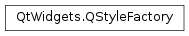

QStyleFactory¶
Detailed Description¶
The
PySide2.QtWidgets.QStyleFactoryclass createsPySide2.QtWidgets.QStyleobjects.The
PySide2.QtWidgets.QStyleclass is an abstract base class that encapsulates the look and feel of a GUI.PySide2.QtWidgets.QStyleFactorycreates aPySide2.QtWidgets.QStyleobject using thePySide2.QtWidgets.QStyleFactory.create()function and a key identifying the style. The styles are either built-in or dynamically loaded from a style plugin (seeQStylePlugin).The valid keys can be retrieved using the
PySide2.QtWidgets.QStyleFactory.keys()function. Typically they include “windows” and “fusion”. Depending on the platform, “windowsvista” and “macintosh” may be available. Note that keys are case insensitive.See also
-
class
PySide2.QtWidgets.QStyleFactory¶
-
static
PySide2.QtWidgets.QStyleFactory.create(arg__1)¶ Parameters: arg__1 – unicode Return type: PySide2.QtWidgets.QStyleCreates and returns a
PySide2.QtWidgets.QStyleobject that matches the givenkey, or returns 0 if no matching style is found.Both built-in styles and styles from style plugins are queried for a matching style.
Note
The keys used are case insensitive.
-
static
PySide2.QtWidgets.QStyleFactory.keys()¶ Return type: list of strings Returns the list of valid keys, i.e. the keys this factory can create styles for.
© 2018 The Qt Company Ltd. Documentation contributions included herein are the copyrights of their respective owners. The documentation provided herein is licensed under the terms of the GNU Free Documentation License version 1.3 as published by the Free Software Foundation. Qt and respective logos are trademarks of The Qt Company Ltd. in Finland and/or other countries worldwide. All other trademarks are property of their respective owners.